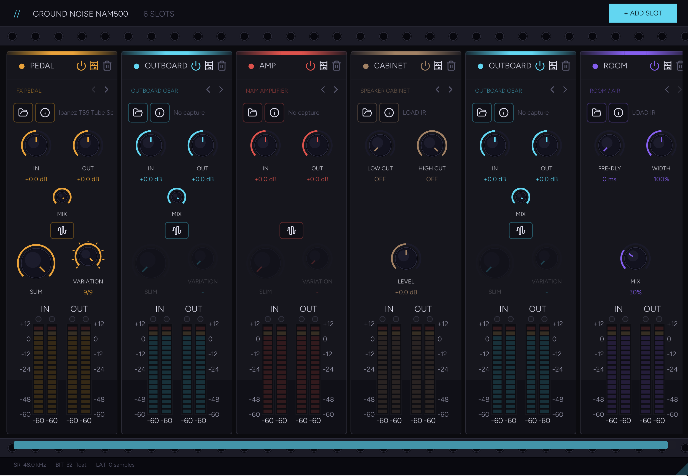

Ground Noise
NEURAL AMP MODELER / SIGNAL CHAIN
NAM capture player.
NAM500 lets you build a chain from your collection of captures, then place each instance where it belongs in the session.

Features
- Load your NAM captures
- Use amps, pedals, and other captured gear
- Route audio between multiple NAM500 instances
- Pick the input and output source for each instance
- Build larger chains inside your DAW
- Play with fast, low-latency processing
- Resize the interface to fit your screen